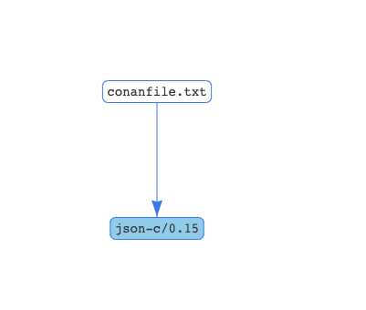

前言
在开发过程中，我们难免会使用到第三方库，在 C/C++ 中使用第三库都是把源码下载下来，然后进行编译。
在多人协作的时候，每个人都需要在自己的电脑上编译一遍，非常的麻烦，编译时间也会随着库的增加不断增加。
其它语言也有这个问题，它们有包管理工具来管理这些依赖，比如 Java 的 Maven 、 Gradle ， Rust 的 cargo ， Python 的 pip ， Node 的 npm 、 yarn 等，使用起来非常方便。
C/C++ 在包依赖管理工具上一直没有一个较好的，不过还是有一些工具的，我们今天要介绍的就是 JFrog 推出的 Conan 。
安装
通用安装方式
conan 推荐使用 pip 安装，安装之前需要你安装了 Python 。
Mac 下使用 Homebrew 安装
使用
创建一个目录 ConanDemo 和 ConanDemo/build 用来存放源码以及编译后生成的文件
1
|
mkdir ConanDemo && mkdir ConanDemo/build && touch main.cpp
|
创建 conanfile.txt 依赖文件
在工程根目录下创建 conanfile.txt 文件，里面保存了第三方依赖库的名字和版本，以及构建工具。这里以 json-c 为例，使用 CMake 作为构建工具。内容如下
1
2
3
4
5
|
[requires]
json-c/0.15
[generators]
cmake
|
下载依赖
经过上一步的配置 conan 知道我们需要的第三方库以及版本，我们就可以进行下载依赖了
1
2
3
4
5
6
7
8
9
10
11
12
13
14
15
16
17
18
19
20
21
22
23
24
25
26
27
28
29
30
31
32
33
34
35
36
37
38
39
40
41
42
43
44
45
46
47
48
49
50
51
52
53
54
55
56
57
58
|
$ cd build
$ conan install .. # 这里的 .. 表示 conanfile.txt 所在的路径
Auto detecting your dev setup to initialize the default profile (/Users/test/.conan/profiles/default)
Found apple-clang 12.0
Default settings
os=Macos
os_build=Macos
arch=x86_64
arch_build=x86_64
compiler=apple-clang
compiler.version=12.0
compiler.libcxx=libc++
build_type=Release
*** You can change them in /Users/test/.conan/profiles/default ***
*** Or override with -s compiler='other' -s ...s***
WARN: Remotes registry file missing, creating default one in /Users/test/.conan/remotes.json
Configuration:
[settings]
arch=x86_64
arch_build=x86_64
build_type=Release
compiler=apple-clang
compiler.libcxx=libc++
compiler.version=12.0
os=Macos
os_build=Macos
[options]
[build_requires]
[env]
json-c/0.15: Not found in local cache, looking in remotes...
json-c/0.15: Trying with 'conancenter'...
Downloading conanmanifest.txt completed [0.33k]
Downloading conanfile.py completed [2.99k]
Downloading conan_export.tgz completed [0.25k]
Decompressing conan_export.tgz completed [0.00k]
json-c/0.15: Downloaded recipe revision 0
conanfile.txt: Installing package
Requirements
json-c/0.15 from 'conancenter' - Downloaded
Packages
json-c/0.15:647afeb69d3b0a2d3d316e80b24d38c714cc6900 - Download
Installing (downloading, building) binaries...
json-c/0.15: Retrieving package 647afeb69d3b0a2d3d316e80b24d38c714cc6900 from remote 'conancenter'
Downloading conanmanifest.txt completed [1.07k]
Downloading conaninfo.txt completed [0.40k]
Downloading conan_package.tgz completed [54.21k]
Decompressing conan_package.tgz completed [0.00k]
json-c/0.15: Package installed 647afeb69d3b0a2d3d316e80b24d38c714cc6900
json-c/0.15: Downloaded package revision 0
conanfile.txt: Generator cmake created conanbuildinfo.cmake
conanfile.txt: Generator txt created conanbuildinfo.txt
conanfile.txt: Generated conaninfo.txt
conanfile.txt: Generated graphinfo
|
看到如上输出表示依赖已经下载成功了。
CMake 配置
在工程根目录下创建 CMakeLists.txt 加入如下配置
1
2
3
4
5
6
7
8
9
10
11
|
cmake_minimum_required(VERSION 3.10.2)
project(ConanDemo)
SET(CMAKE_CXX_STANDARD 11)
# conan 配置
include(${CMAKE_BINARY_DIR}/conanbuildinfo.cmake)
conan_basic_setup()
add_executable(conan main.cpp)
target_link_libraries(conan ${CONAN_LIBS})
|
这里和 conan 有关的就只有三行，也就是 include(${CMAKE_BINARY_DIR}/conanbuildinfo.cmake) 和 conan_basic_setup() 以及 target_link_libraries(conan ${CONAN_LIBS}) ，还是非常简单的。
编译
1
2
3
|
cd build
cmake -DCMAKE_EXPORT_COMPILE_COMMANDS=1 -DCMAKE_BUILD_TYPE=Debug ..
cmake --build .
|
这样编译好了之后就能够在 build/bin 下找到 conan 这个可执行文件了。不过我们没有写任何代码。
使用 json-c 解析 JSON
我们先把 main.cpp 中的代码补上
1
2
3
4
5
6
7
8
9
10
11
|
#include <json-c/json.h>
#include <cstdio>
int main(int argc, char *argv[])
{
json_object *obj;
int sflags = 0;
obj = json_tokener_parse("{\"languages\": [\"C\", \"C++\", \"Java\", \"Python\", \"Go\", \"Rust\"] }");
printf("obj.tostring()=%s\n", json_object_to_json_string_ext(obj, sflags));
return 0;
}
|
然后执行编译
1
2
3
|
cd build
cmake -DCMAKE_EXPORT_COMPILE_COMMANDS=1 -DCMAKE_BUILD_TYPE=Debug ..
cmake --build .
|
编译完成后得到 bin/conan 这个文件，执行结果如下
1
2
|
$ ./bin/conan
obj.tostring()={"languages":["C","C++","Java","Python","Go","Rust"]}
|
至此，使用 conan 来管理 C/C++ 依赖已经完成了，使用还是十分简单方便的。
conan 搜索
使用 conan 需要知道第三方库的名字和版本，我们可以通过 conan search 来进行搜索, 以 json 为例
1
2
3
4
|
$ conan search json-c
Existing package recipes:
json-c/0.15
|
除了使用命令，你可以在 JFrog ConanCenter - The Central Repository for C / C++ packages 中搜索
查看项目中依赖的第三方库
conda 提供了一个图形化的依赖视图，让我们可以非常直观的看到有哪些依赖，通过如下命令生成依赖视图
conan info .. --graph=dependent.html
使用浏览器打开 dependent.html 如下所示

参考